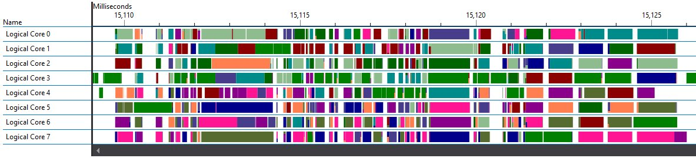
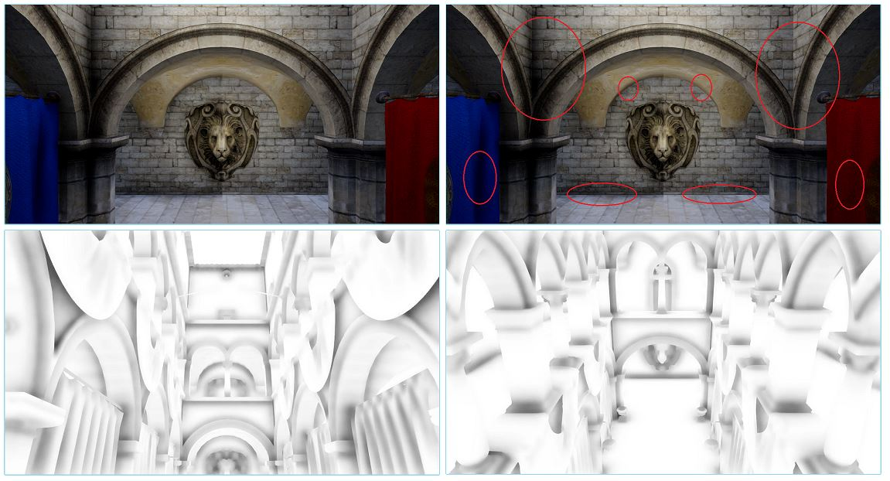

Xenko 1.8 release notes
Highlights
Xenko release 1.8 introduces three major new features along with several relevant enhancements to existing features.
We are proud to be able to offer you our new UI Editor, enhanced performance via our newly multithreaded engine with Vulkan support and our new Prefab Model.
Also, for your cutting edge rendering needs, we now support SSAO and cel (toon) shading!
UI Editor
This release introduces new UI assets along with a brand-new UI editor, so that you can create amazing UI directly from the Game Studio!

The UI editor provides a full WYSIWYG experience. You can author the whole visual tree of your UI, edit the properties of each UI element (such as layout, background color, etc.) and preview its rendering.
Two new assets are available:
- UI Page asset: represents a typical tree of UI elements that can assigned to the UI Component of an entity in the scene or prefab editor.
- UI Library asset: represents a collection of UI trees (similar to prefabs) that can be reused by other UI Pages.
- Both have runtime equivalents. UIComponent now expects a UI Page. A UI Library is useful to create or edit UI at runtime.
And since it is built on the same system as archetypes and prefabs, you can easily create shared UI parts, override some properties and have changes propagating automatically.
Performance
Multithreading
Many computationally intensive systems have been multithreaded. Expect a major increase in performance and better scaling to correspond with the size of your game! We have observed up to 6 times higher frame rates for heavily CPU bound scenes so far (on a typical 4-core CPU).

Parallelized code includes many EntityProcessors and almost every part of our recently rewritten rendering pipeline. On Vulkan and Direct3D12 this includes also recording of drawing command lists, giving them an edge over the other APIs.

Developers can find classes and utilities for concurrent programming in the SiliconStudio.Core.Threading namespace, e.g. Dispatcher.For(), which resemble the Task Parallel Library, but are more lightweight and tailored for work performed every frame in a game's update loop.
Over time, we will look into multithreading more parts of the engine, including independent subsystems, such as different phases of the RenderSystem and Scripts.
Prefab Model
The Prefab Model is a new type of Model asset that generates an optimized baked and merged single model from a prefab.
It merges meshes together by material and vertex layout. You can easily go from thousands of draw calls to one or two draw calls.
To use it, just create a new Prefab Model asset from the Game Studio and assign a prefab to it.
Make sure that the base prefab is just containing static entities as only ModelComponent types are merged.
Rendering
SSAO
Ambient Occlusion was added to the list of post-processing effects. The current technique implements Scalable Ambient Obscurance. It exposes a variety of options, including number of tap samples, intensity, tap radius and back buffer size.

It is currently part of the post-effect pipeline, but will later move to the lighting pipeline for more realistic rendering.
Cel Shading
Cel shading (or Toon shading) is now available as a rendering model with both Diffuse and Specular rendering options. The default implementation limits the light product to binary or 3-cuts discrete levels. You can also reference a ramp texture for better artistic control.

How To Upgrade
UI
The UIComponent RootElement property has been replaced with the Page property. It now expects an instance of the UIPage type. Scripts that were setting the RootElement property need to be updated:
// previous code (will not compile)
var grid = new Grid();
var component = Entity.Get<UIComponent>();
component.RootElement = grid;
// new code
var grid = new Grid();
var component = Entity.Get<UIComponent>();
component.Page = new UIPage
{
RootElement = grid
};
Due to the slight API and behavior changes made to UI system, you might have to adapt some other part of your code. For example:
var text = new TextBlock();
var canvas = new Canvas();
canvas.Children.Add(text);
var position = new Vector3(0.0f, 1.0f, 0.0f);
// previously setting this attached property will also set Canvas.UseAbsolutePositionPropertyKey to false automatically
text.DependencyProperties.Set(Canvas.RelativePositionPropertyKey, position);
// now you need to set it explicitly
text.DependencyProperties.Set(Canvas.UseAbsolutePositionPropertyKey, false);
// note that using extension methods is the recommended way, and does all of that in a more concise way:
text.SetCanvasRelativePosition(position);
Changelog
Version 1.8.0-Beta
Release date: 2016/08/31
Enhancements
General
- Added a
DebugConsoleSystemto be able to print basic debug information in game. - Added Utility methods
FindChildandFindRoottoEntity. - Animation blend trees can now be created in script. The
AnimationBlendpre-built script shows how to do it easily - Updated Roslyn to 1.3.2
Assets
- Yaml scene files now encode entity and component references in a much more compact way
- Yaml serialization order is now following class declaration order
Audio
- Game studio side: added hard limits in Compression ratio, also now it is using a slider.
- Added
SetRangeinSoundInstanceto be able to set play range, it also enables seeking. - Added
Positionproperty inSoundInstanceto be able to know the position in time of your playing instance. - Added
PlayAndForgettoAudioEmitterSoundControllerto play many instances of the same sound rapidly. - Added RequestedAudioDevice in AudioSystem to allow game code to select audio devices (Windows only for now).
AudioEmitterComponentnow contains a dictionary of sounds that can be used from the emitter, those can be set from the Game Studio directly!- Game Studio sound preview now uses the internal engine, this means that you can directly preview the compression rate!
Graphics
- CommandList can now compiled and executed
- Constant Buffers are now uploaded in a single GPU Buffer and set with offsets on platform/API that support this mode
- D3D12: reduced number of API calls
Game Studio
- About Page accessible from Menu-->Help-->About.
Input
- Added preliminary controller vibration support with
Input.SetGamePadVibration
Particles
- Particle rendering now uses the improved multithreaded pipeline, significantly speeding up the vertex buffer building.
Samples
- Several samples have been removed. Particles and Physics samples have been greatly reduced and merged into only two, which allows the user to check more features with a single sample.
Issues fixed
Physics
- Procedural models can now be used as a source to generate convex hull shapes.
- We are now using the github version of Bullet Physics and actively cooperating with the project.
- Fixed ColliderShape cached matrices computation.
Game Studio
- Credential dialog will now save the credential settings when closing.
- Credential dialog will not appear if you checked "Do not ask again".
- Fix hang when launching a Linux game remotely.
Breaking changes
UI
- The UIComponent expect a UI Page in place of the previous Root Element property.
- Most dependency properties were changed into regular C# properties, except the ones that are attached properties (such as the Column and Row attached property of a Grid).
- In desktop, TouchMove event is also raised when no mouse button are pressed.
- Default style of the UI has been removed.
Audio
- Remove Play with boolean argument from
SoundInstance, instead the same behavior will be achieved by using PlayExtended or Play. - Rename
IsLoopedintoIsLooping. - Deprecated:
GetSoundController,AttachSound,AttachSounds,DetachSound,DetachSounds. Please add sounds now from theAudioEmitterComponent
Physics
Collision.Contactsis now anHashSetso access by index is not possible anymore, please useforeachor iterate them instead.
VR
- Add audio, status and re-center support for Oculus Rift.
Linux
- Fix Mono issue with the new effect compiler (introduced in 1.7.5-Beta). No need to enable the "remote compiler" anymore in the "package properties".
Version 1.8.1-Beta
Release date: 2016/09/09
Enhancements
Game Studio
- Current selection in the UI editor can be changed from the context menu. This is especially useful to select an element that is covered by another.
- Add snapping when moving or resizing a element in the UI editor.
Issues fixed
- Fix a compilation issue with Prefab Models using other Prefab Models to be compiled
- Fix and improve edition of Generics and Composition Nodes for Shader class nodes in materials
Game Studio
- Fix a potential NullReferenceException when validating a range value in the property grid.
- Creation of derived asset (ArcheType) for UI page or UI library are not supported, but were still allowed.
- Fix an issue with message box that returned a wrong value when the user chose to close it instead of clicking on one of its button. This could result in data loss when asked to save the project upon closing the Game Studio.
- Remove incorrect GPL headers in script templates, e.g. BasicCameraController (#457).
- Display error message in credential dialog when remote location does not exist instead of reporting invalid credentials.
Linux
- Fix failure when compiling shaders for the Vulkan backend on the remote host.
Particles
- Particles materials refactored, significantly improving memory performance.
Samples
- Fix samples were depending on the wrong version of Xenko.
Version 1.8.2-Beta
Release date: 2016/09/21
Enhancements
Game Studio
- Improve snapping when moving or resizing an element in the UI editor: moved element will be "attracted" by the parent container bounds or siblings like magnets. This should ease aligning elements with one another.
- Auto adjust alignment property when moving to left/right (resp. top/bottom) edge of the parent container.
- The single root of a UI page can be removed and a new one can be added instead.
- Improve responsiveness of the Game Studio.
Issues fixed
Game Studio
- Fix magic wand tool not working inside the sprite region.
- Fix an issue when removing the single root of a UI page.
- Fix some user operations that were taking a very long time to be executed.
- Fix a crash when setting materials in a model component.
Physics
- Fix some memory leaks.
Samples
- Fix some scripts that were depending on C# level 6 features.
Version 1.8.3-Beta
Release date: 2016/10/07
Enhancements
Editor
- Creating a Prefab from a group of entities will name it after the first entity
- More relevant messages displayed now when assets are not found
Physics
- Add a new Jump method which supports an arbitrary jump vector.
- Add NormalizedDistance to HitResult.
- Add a version of RaycastPenetrating ( and shape sweep ) that accepts a group and filters accordingly.
- Add optional offsets to convex hull shapes.
- Make Move method obsolete, the new method to use from now is SetVelocity which internally applies the simulation fixed time step.
- Change Character controller's max slope default value to 45 degrees
Issues fixed
Engine
- Fix calculation of bounding boxes of skinned meshes.
- Fix culling mode for meshes with negative scale.
- Disable bloom, light streaks and lens flares when the bright-pass is disabled.
- Fix an issue with Event system and scheduling.
Physics
- Fix debug shape rendering of static colliders when those colliders are forced to move
- Fix debug shape rendering of enabled/disabled entities.
- Fix issues with Jumping
- Fix transformation propagation of dynamic bodies when in a skeleton.
Serialization
- Fix an issue in SharpYaml preventing generic types to be properly serialized. For instance List
can now be used from a script.
Known Issues
- On Linux, when switching the underlying Graphics Platform, rendering will not occur or fail. Delete the cache, local and roaming folder on the Linux host and restarting the game should fix the issue.